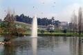
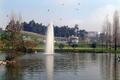
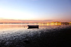
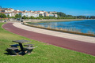
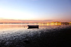
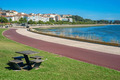
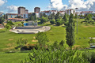
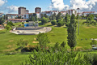

Multimédia
Nesta página encontra conteúdos multimédia
Fotografias
 

 



 

Video
Video da cidade do Barreiro:
Poesia
À beira do Rio Tejo, em silêncio a brilhar,
Ergue-se o Barreiro, com história no olhar.
Entre trilhos e fábricas, memórias a pulsar,
Cidade que sonha, sem nunca parar.
Ruas que guardam trabalho e paixão,
Gente que vive com alma e coração.
Do cais ao jardim, o tempo a sorrir,
Barreiro é casa, é lugar para sentir.